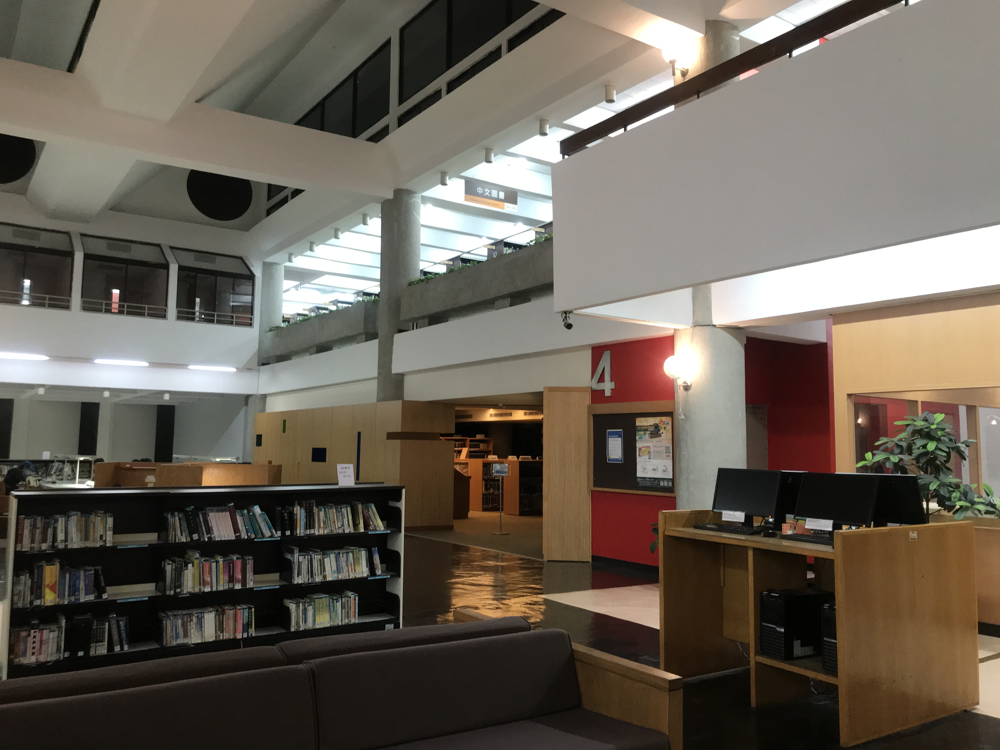

圖書館
原中原大學圖書館成立於1955年，創校之初，暫以行政大樓西首為館舍。之後，1964年移至行政大樓東側另建圖書館大樓一座，隨著學校擴展、系所增加，原有硬體設備已不敷使用，乃於1982年規劃興建新館（亦即本館），於1985年落成啟用，為紀念本校創辦人張董事長靜愚先生，命名為「張靜愚紀念圖書館」。

總館8:00 - 22:00 多媒體中心9:00 - 21:00
地下一樓自習室8:00-01:00(凌晨1點) 地下一樓悅讀室8:00-01:00(凌晨1點)